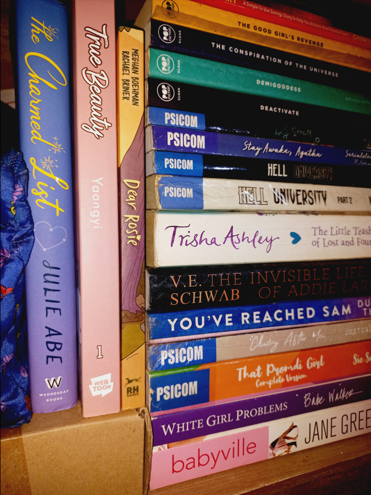
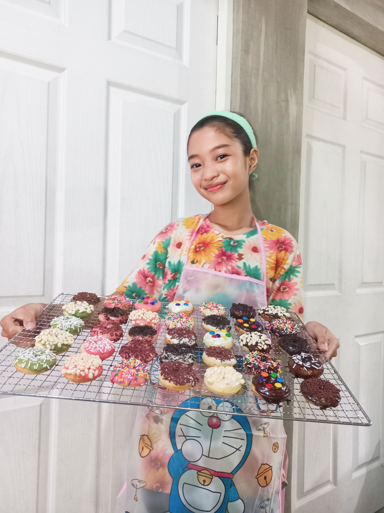
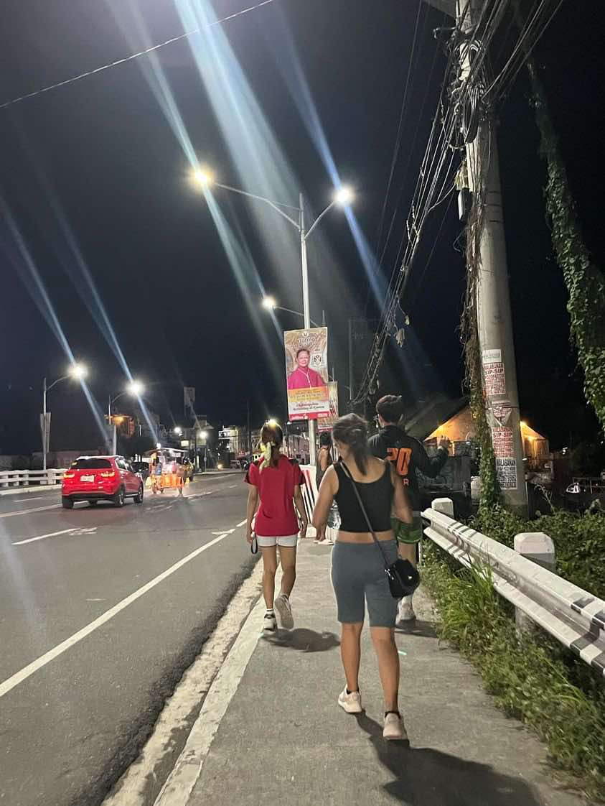
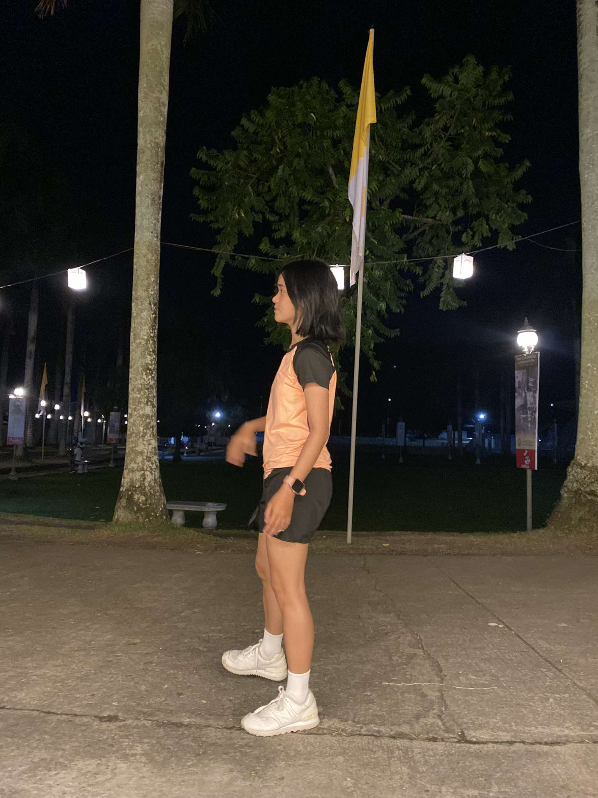
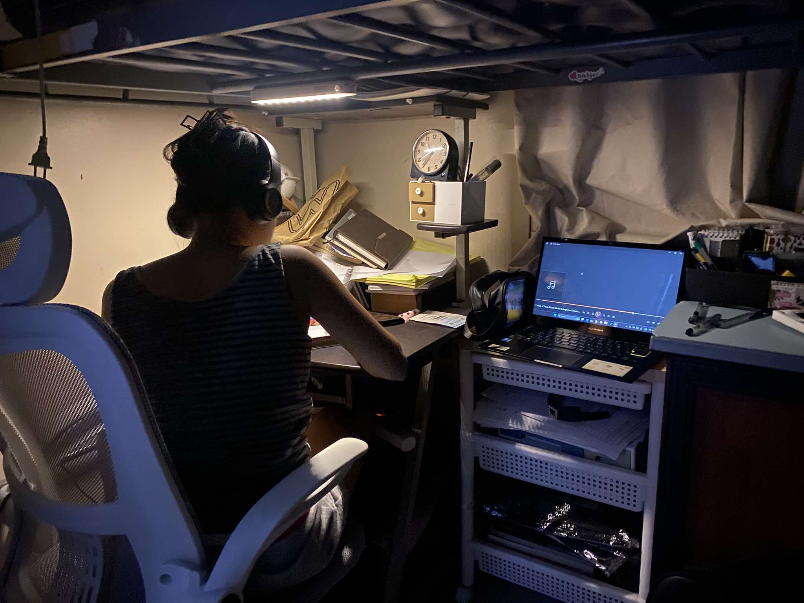
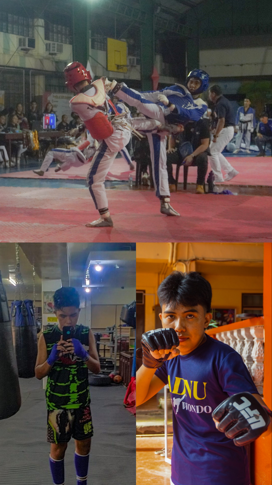
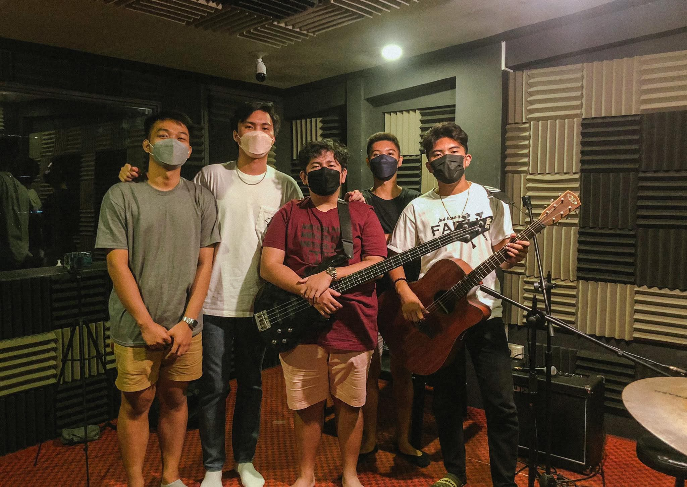
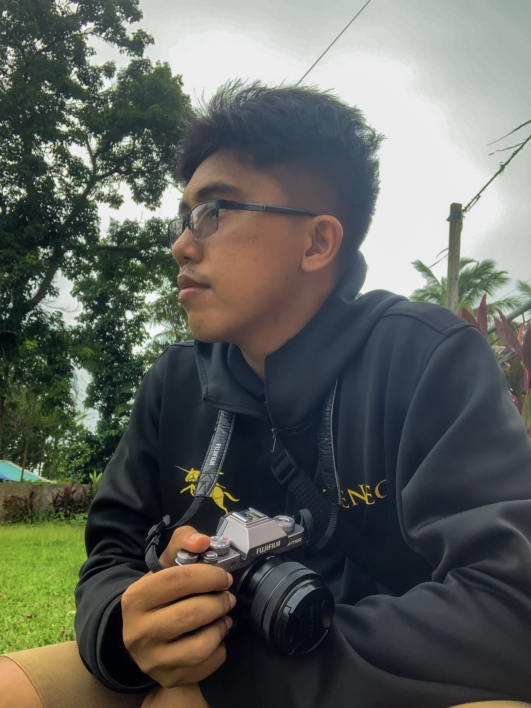

It is the first hobby that my father taught me since 2017.
Playing Basketball
My father also taught me this even though I'm not that good at playing with him.
Muay Thai Training
My grandfather told me to learn self-defense, especially since I work at McDonald's during closing shifts.
Hobbies of Charlene S. Nepomuceno
Reading
Reading have always been my thing, it was in senior high when I started hanging out at libraries a lot. Turns out, getting totally lost in a book there was the perfect way to quiet my social anxiety.
Book Collecting
My reading journey started with Wattpad when I was in grade 6, then a Kindle that I adored, but eye strain led me to physical copies. Buying a new book and placing it on the shelf is like adding a piece of happiness to my life. Below are my first treasures.
Baking
Baking was a hobby ever since. After graduating senior high, I took the leap and made it my own business. The best part? I'm earning money doing what I love.


Hobbies of Maria Curly Ann A. Lumibao
My hobbies revolve around a balance of nature, self-expression, and awareness.
I love biking through scenic routes, just immersing myself in the peace nature brings.
As an outdoor/adventurous wannabe, it gives me the opportunity to be one with nature.
I've also recently become fond of jogging and working out. I like how it energizes me and keeps me grounded while helping me clear my mind.
When I'm not outside and have time, I read educational and Christian books.
I also enjoy painting, specifically the ready-made sketches that I've purchased.
Biking
Jogging


Reading Books and Painting

Hobbies of Leonard Christian D. Arganda
MMA (Mixed Martial Arts)

Since childhood, MMA has been more than just a hobby it's my lifestyle. Growing up in a military
family instilled discipline and a warrior’s mindset in me, which fueled my passion for martial arts.
The styles I practice include Taekwondo, Kickboxing, Boxing, Muay Thai, and Wrestling. These disciplines
have shaped me physically and mentally, making MMA not just a sport but a way of life. It’s my passion, my
strength, and the heart of a warrior.
Music

I have a deep love for music and can play several instruments, including guitar, ukulele,
piano, and drums. My passion for music also led me to learn singing, which serves as both
a form of self-expression and relaxation.
Photography

I enjoy capturing memories and meaningful moments through photography. Looking back at
old photos is one of my favorite pastimes, allowing me to reflect on the past while shaping a better future.
Benefits of Our Hobbies
Hobby
Benefit
Playing Guitar
Improves creativity and hand coordination
Playing Basketball
Enhances teamwork and physical fitness
Muay Thai Training
Teaches self-defense and discipline
Biking and Jogging
Improves cardiovascular health
Reading Books and Painting
Improves vocabulary, enhances creativity and attention to detail
Baking
Generates income.
MMA
Builds discipline, physical strength, and mental toughness
Music
Enhances creativity, cognitive function, emotional expression, and stress relief